É toda e qualquer pessoa que visita ou somente procura a empresa com algum interesse em adquirir produtos
ou
serviços no momento presente ou futuro. Aperte no topico que deseja para conhecer a funcionalidade de
cada
opção.
+Procedimentos para cadastrar clientes:
No sistema:
- Clique no ícone
 ou pressione F3.
ou pressione F3.
- Para que o sistema gere um código sequencial (automático), clique na lâmpada amarela

- Você pode, se desejar, informar/digitar o seu código de controle. Caso este código não esteja
utilizado,
o sistema permitirá o cadastro.
- Informe todos os campos pertinentes ao cliente e tecle F10 para salvar o cadastro.
OBS.: As informações sobre cada campo estão no final da página.
+Para que seja possivel salvar um cadastro é obrigatorio o
preenchimento dos campos:
- Convênio
- Nome
- Endereço completo
- Sexo
+Como alterar os dados de um cliente?
- Pressione F3 e digite o código do convênio e do cliente já cadastrado. Caso não saiba o código,
clique
em consulta (F6).
- A pesquisa poderá ser realizada através do nome do cliente, do convênio ou do CPF do cliente.
Encontrado
o Cliente, faça as alterações desejadas e clique em Salvar (F10).
+É possível excluir os clientes?
Sim, mas deve-se atentar aos seguintes detalhes:
- Se existir movimentação (venda/nota fiscal de saída) vinculada a este cliente, a exclusão não será
permitida.
+Descrição dos campos de cadastro de clientes
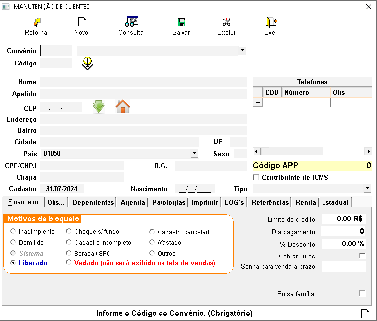
- Convênio: Informe o código do convênio a que pertence o cliente.(Obrigatorio)
- Código: Gerado automaticamente pelo sistema ou pode ser informado
manualmente.(Obrigatorio)
- Nome: Informe o nome do cliente.(Obrigatorio)
- Apelido:Apelido do cliente.
- CEP: Digite o CEP(Obrigatorio), e o sistema pesquisará na base de dados da Sortee.
Caso
retorne que não encontrou os dados de endereço, digite esses dados da seguinte forma:
***RUA, NÚMERO (respeitando o espaço após a vírgula), se não tiver número coloque 0 ou então
deixe sem nada, não colocar letras após a vírgula, pois em caso de emissão de Nota Fiscal
Eletrônica
dá erro.
- Bairro: Informe o bairro.(Obrigatorio)
- Cidade: Informe a cidade.(Obrigatorio)
- UF: Informe o estado.(Obrigatorio)
- CPF/CNPJ: Informe o CPF/CNPJ.(Informçao importante pois em caso de emissao de NF-e
de
cancelamento da venda é necessario um CPF)
- R.G: Informe o número do documento de identidade.
- Chapa: Caso seja convênio de uma empresa onde o funcionário seja identificado pelo
crachá, informe o número de identificação.
- Sexo: Informe o sexo do cliente.(Obrigatorio)
- Cadastro: Data de cadastro do cliente no sistema (preenchido automaticamente quando
clicar em novo (F3)).
- Nascimento: Informe a data de nascimento do cliente.
- Telefone: Informe o telefone para contato com o cliente (se tiver mais de um
telefone,
digite na próxima linha).
Descrição das abas de cadastro de clientes:
+Aba Financeiro:

- Marque a situação do cliente na sua empresa.
- Informe também, se o cliente possui algum limite de crédito, qual o dia de pagamento e se tem algum
desconto (lembre-se que se o convênio tiver algum desconto ou tabela de descontos cadastrados, será
aplicado desconto sobre desconto no ato da venda).
- Marque a opção para cobrar juros caso o cliente pague com atraso.
Obs.: Para usar a função de cobrar juros é necessário ir nos parâmetros, selecionar a aba
config
2 e informar a porcentagem de juros e a partir de quantos dias começa a cobrar juros.
- Se o cliente desejar, pode ser cadastrado uma senha pessoal para vendas a prazo, para ele ou para
dependentes.

- É possível adicionar informações no cadastro do cliente, bem como e-mail, local de trabalho, nome do
pai, nome da mãe, e no campo observação escreva alguma mensagem para ser exibida no ato da venda.
+Aba Dependentes:

- Informe os dependentes que podem comprar na conta do cliente, da seguinte forma:
- *** Nome do dependente.
- *** Tipo: (F) Filho/Filha, (M) Mãe, (P) Pai, (E) Esposa, (R) Marido, (O) Outros.
- *** Documento de identificação do dependente.
- Para excluir algum dependente, selecione o mesmo e pressione a tecla Delete. Será exibida a seguinte
mensagem:

Clique em "Sim" e depois clique em "Salvar" (F10).
+Aba Agenda:
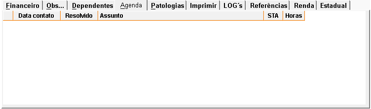
- É possível agendar contatos futuros com clientes, pressione F11 para incluir assuntos a tratar.
+Aba Patologias:
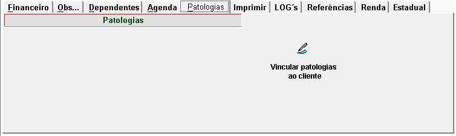
- É possível cadastrar patologias para os clientes.
- Para cadastrar patologias, clique em "Vincular Patologias ao Cliente" e será exibida a seguinte
tela:
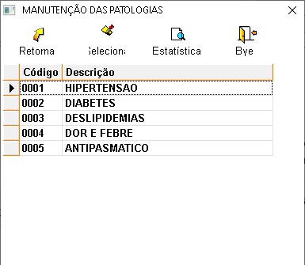
- Selecione a patologia que deseja vincular ao cliente, depois clique em "SELECIONA".
+Aba Imprimir:
- Salve os dados do cliente, depois retorne no cadastro e clique na aba "Imprimir". Será mostrado as
opções ficha cadastral do cliente, Termo LGPD e o filtro para o relatório.
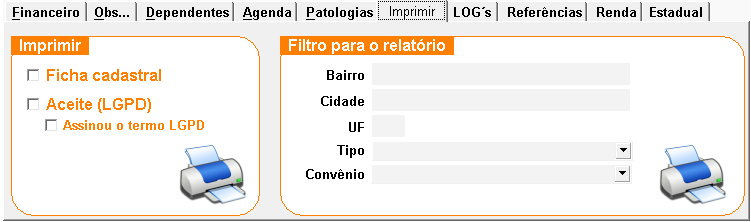
Ao selecionar a ficha cadastral e clicar na impressora será mostrado da seguinte
forma:
Essa ficha cadastral é uma garantia de que o cliente está ciente sobre todas as compras realizadas
por
ele ou pelos dependentes cadastrados, e estão sujeitos às penalidades da lei, assim descritas no
documento. Peça a ele que assine e entregue uma via e mantenha uma na farmácia.

Aceite (LGPD)
- Assinou o termo LGPD
O Termo LGPD (Lei Geral de Proteção de Dados Pessoais) refere-se à legislação brasileira que regula o
tratamento de dados pessoais de pessoas físicas, visando proteger os direitos fundamentais de
liberdade,
privacidade e o livre desenvolvimento da personalidade. A LGPD estabelece diretrizes para a coleta,
armazenamento, uso e compartilhamento de dados pessoais por organizações, sejam elas públicas ou
privadas. Ela obriga as empresas a obter o consentimento explícito dos titulares dos dados, garantir
a
segurança das informações e oferecer transparência sobre o uso dos dados. Além disso, prevê sanções
para
o descumprimento de suas normas, com o objetivo de assegurar a proteção dos dados pessoais no
Brasil.
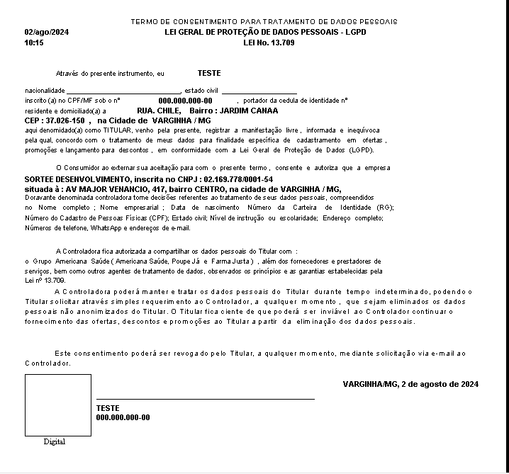
O Filtro para relatório apresenta um relatorio com todos os clientes cadastrados no
sistema
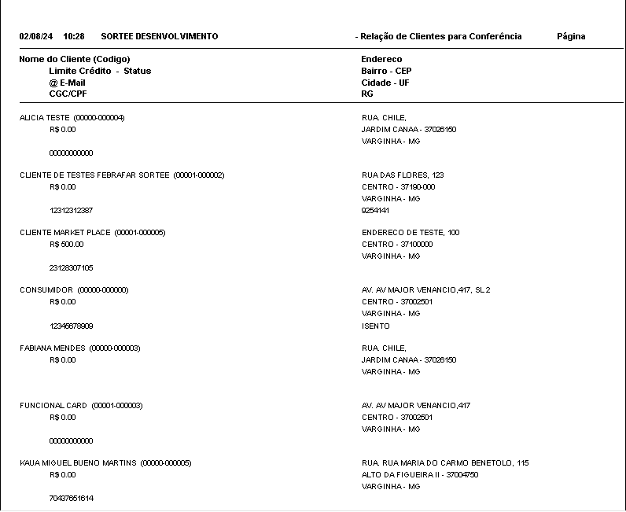
+Aba LOGS's:
Apresenta todas alterações realizadas nesse cadastro.
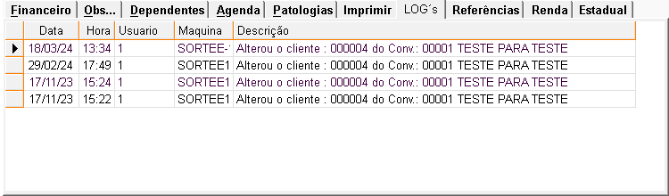
+Aba Referências:
É possível cadastrar informações de referências bancárias ou comerciais do cliente para aprovação de
limite de crédito.
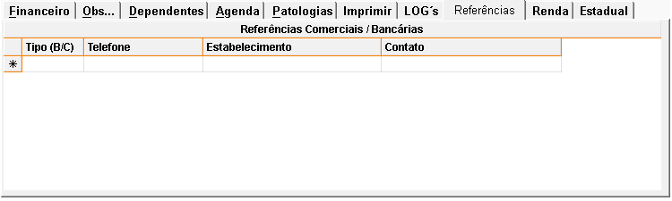
+Aba Renda:
Campo para registro das informaçoes sobre a renda do cliente para liberaçao de limite de credito
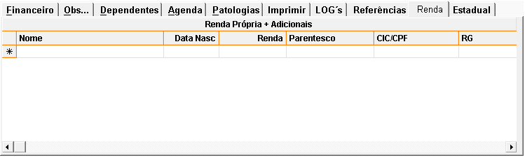
+Aba Estadual:
Campo para registro da inscriçao estadual
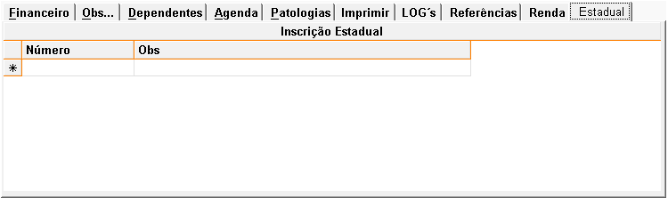